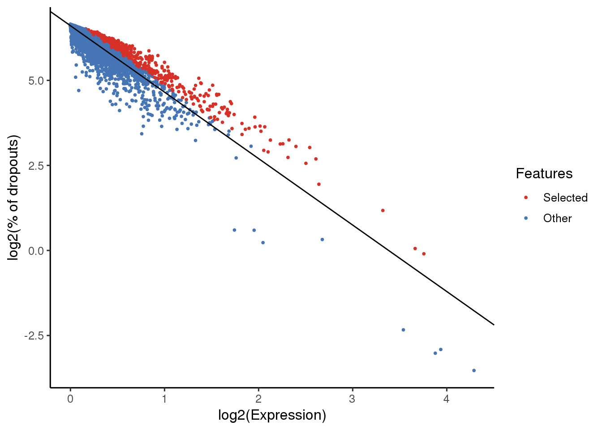
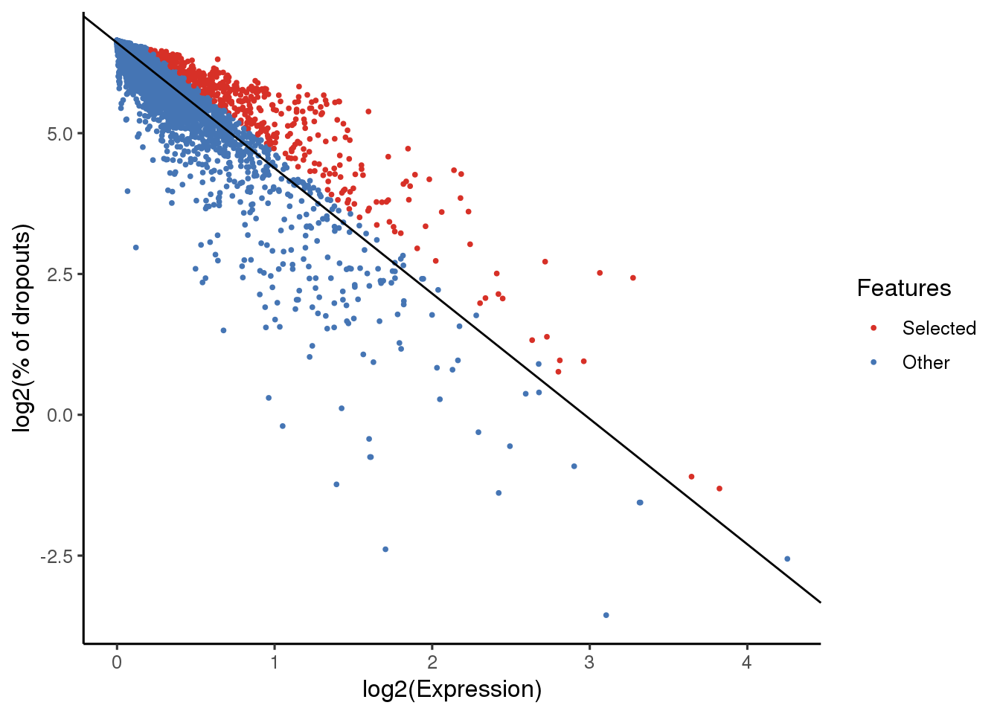
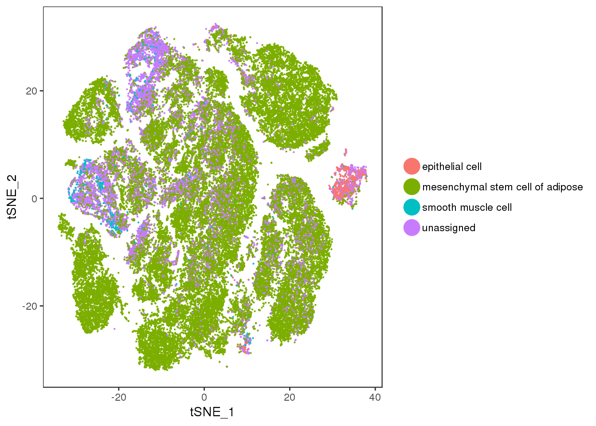
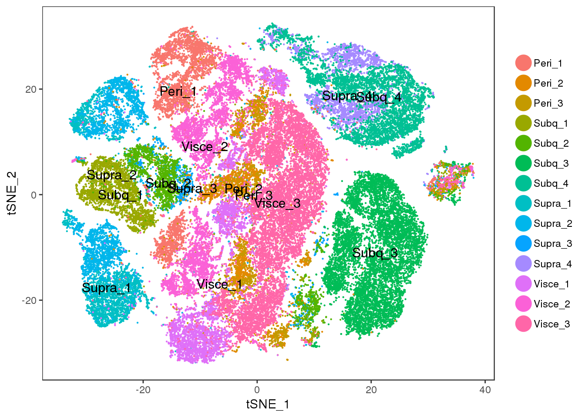

Last updated: 2019-01-01
workflowr checks: (Click a bullet for more information) ✔ R Markdown file: up-to-date
Great! Since the R Markdown file has been committed to the Git repository, you know the exact version of the code that produced these results.
✔ Environment: empty
Great job! The global environment was empty. Objects defined in the global environment can affect the analysis in your R Markdown file in unknown ways. For reproduciblity it’s best to always run the code in an empty environment.
✔ Seed:
set.seed(20181026)
The command set.seed(20181026) was run prior to running the code in the R Markdown file. Setting a seed ensures that any results that rely on randomness, e.g. subsampling or permutations, are reproducible.
✔ Session information: recorded
Great job! Recording the operating system, R version, and package versions is critical for reproducibility.
✔ Repository version: a7860ef
wflow_publish or wflow_git_commit). workflowr only checks the R Markdown file, but you know if there are other scripts or data files that it depends on. Below is the status of the Git repository when the results were generated:
Ignored files:
Ignored: code/.ipynb_checkpoints/
Ignored: output/10x-180504
Ignored: output/10x-180504-aligned
Ignored: output/10x-180504-aligned-metageneplot
Ignored: output/10x-180504-beforeQC
Ignored: output/10x-180504-beforeqc
Ignored: output/10x-180504-cca-discardedcells
Ignored: output/10x-180504-ccregout
Ignored: output/10x-180504-ccregout-aligned
Ignored: output/10x-180504-ccregout-cca-discardedcells
Ignored: output/10x-180831
Ignored: output/10x-180831-T1T2T3
Ignored: output/10x-180831-T4T5
Ignored: output/10x-180831-beforeqc
Ignored: output/10x-180831-notcleaned
Ignored: output/monocle/
Untracked files:
Untracked: tables/10x-180504-scmap-numbers
library(Seurat)Loading required package: ggplot2Loading required package: cowplot
Attaching package: 'cowplot'The following object is masked from 'package:ggplot2':
ggsaveLoading required package: Matrixlibrary(scmap)Creating a generic function for 'toJSON' from package 'jsonlite' in package 'googleVis'library(SingleCellExperiment)Loading required package: SummarizedExperimentLoading required package: GenomicRangesLoading required package: stats4Loading required package: BiocGenericsLoading required package: parallel
Attaching package: 'BiocGenerics'The following objects are masked from 'package:parallel':
clusterApply, clusterApplyLB, clusterCall, clusterEvalQ,
clusterExport, clusterMap, parApply, parCapply, parLapply,
parLapplyLB, parRapply, parSapply, parSapplyLBThe following objects are masked from 'package:Matrix':
colMeans, colSums, rowMeans, rowSums, whichThe following objects are masked from 'package:stats':
IQR, mad, sd, var, xtabsThe following objects are masked from 'package:base':
anyDuplicated, append, as.data.frame, cbind, colMeans,
colnames, colSums, do.call, duplicated, eval, evalq, Filter,
Find, get, grep, grepl, intersect, is.unsorted, lapply,
lengths, Map, mapply, match, mget, order, paste, pmax,
pmax.int, pmin, pmin.int, Position, rank, rbind, Reduce,
rowMeans, rownames, rowSums, sapply, setdiff, sort, table,
tapply, union, unique, unsplit, which, which.max, which.minLoading required package: S4Vectors
Attaching package: 'S4Vectors'The following object is masked from 'package:Matrix':
expandThe following object is masked from 'package:base':
expand.gridLoading required package: IRangesLoading required package: GenomeInfoDbLoading required package: BiobaseWelcome to Bioconductor
Vignettes contain introductory material; view with
'browseVignettes()'. To cite Bioconductor, see
'citation("Biobase")', and for packages 'citation("pkgname")'.Loading required package: DelayedArrayLoading required package: matrixStats
Attaching package: 'matrixStats'The following objects are masked from 'package:Biobase':
anyMissing, rowMedians
Attaching package: 'DelayedArray'The following objects are masked from 'package:matrixStats':
colMaxs, colMins, colRanges, rowMaxs, rowMins, rowRangesThe following object is masked from 'package:base':
applylibrary(dplyr)
Attaching package: 'dplyr'The following object is masked from 'package:matrixStats':
countThe following object is masked from 'package:Biobase':
combineThe following objects are masked from 'package:GenomicRanges':
intersect, setdiff, unionThe following object is masked from 'package:GenomeInfoDb':
intersectThe following objects are masked from 'package:IRanges':
collapse, desc, intersect, setdiff, slice, unionThe following objects are masked from 'package:S4Vectors':
first, intersect, rename, setdiff, setequal, unionThe following objects are masked from 'package:BiocGenerics':
combine, intersect, setdiff, unionThe following objects are masked from 'package:stats':
filter, lagThe following objects are masked from 'package:base':
intersect, setdiff, setequal, unionData loading and inspection of the metadata.
load('/data/pub-others/tabula_muris/figshare/180126-facs/maca.seurat_obj.facs.figshare_180126.RData')
head(seurat_obj@meta.data) nGene nUMI orig.ident cell
A12.D041914.3_8_M.1.1 4712 1221663 SeuratProject A12.D041914.3_8_M.1.1
B16.D041914.3_8_M.1.1 3652 1837897 SeuratProject B16.D041914.3_8_M.1.1
C18.D041914.3_8_M.1.1 6220 1703523 SeuratProject C18.D041914.3_8_M.1.1
D22.D041914.3_8_M.1.1 5322 949162 SeuratProject D22.D041914.3_8_M.1.1
F4.D041914.3_8_M.1.1 3036 59975 SeuratProject F4.D041914.3_8_M.1.1
C19.D041914.3_8_M.1.1 5350 808935 SeuratProject C19.D041914.3_8_M.1.1
tissue cell_ontology_class cell_ontology_id
A12.D041914.3_8_M.1.1 Bladder mesenchymal cell CL:0008019
B16.D041914.3_8_M.1.1 Bladder bladder cell CL:1001319
C18.D041914.3_8_M.1.1 Bladder bladder cell CL:1001319
D22.D041914.3_8_M.1.1 Bladder bladder cell CL:1001319
F4.D041914.3_8_M.1.1 Bladder mesenchymal cell CL:0008019
C19.D041914.3_8_M.1.1 Bladder bladder cell CL:1001319
tissue_cell_type
A12.D041914.3_8_M.1.1 Bladder_mesenchymal cell
B16.D041914.3_8_M.1.1 Bladder_bladder cell
C18.D041914.3_8_M.1.1 Bladder_bladder cell
D22.D041914.3_8_M.1.1 Bladder_bladder cell
F4.D041914.3_8_M.1.1 Bladder_mesenchymal cell
C19.D041914.3_8_M.1.1 Bladder_bladder cellsce_maca <- as.SingleCellExperiment(seurat_obj)
all10x <- readRDS('output/10x-180504')
sce_10x <- as.SingleCellExperiment(all10x)
#convert maca gene names to uppercase to match 10x gene names
rowData(sce_maca)['feature_symbol'] <- unlist(lapply(rowData(sce_maca)$gene, function(x){return(toupper(x))}))
rowData(sce_10x)['feature_symbol'] <- rowData(sce_10x)$gene
counts(sce_10x) <- as.matrix(counts(sce_10x))
logcounts(sce_10x) <- as.matrix(logcounts(sce_10x))
counts(sce_maca) <- as.matrix(counts(sce_maca))
logcounts(sce_maca) <- as.matrix(logcounts(sce_maca))
sce_maca <- selectFeatures(sce_maca, suppress_plot = FALSE)
Celltypes in the fat dataset
seurat_obj@meta.data %>% filter(tissue=="Fat") %>% distinct(tissue_cell_type) tissue_cell_type
1 Fat_myeloid cell
2 Fat_T cell
3 Fat_B cell
4 Fat_granulocyte
5 Fat_mesenchymal stem cell of adipose
6 Fat_endothelial cell
7 Fat_natural killer cell
8 Fat_epithelial cell
9 Fat_neutrophil
10 Fat_smooth muscle cellSubsetting and preparing the data.
maca_fat <- SubsetData(SetAllIdent(seurat_obj, id='tissue'), ident.use="Fat")
sce_maca_fat <- as.SingleCellExperiment(maca_fat)
rowData(sce_maca_fat)['feature_symbol'] <- unlist(lapply(rowData(sce_maca_fat)$gene, function(x){return(toupper(x))}))
counts(sce_maca_fat) <- as.matrix(counts(sce_maca_fat))
logcounts(sce_maca_fat) <- as.matrix(logcounts(sce_maca_fat))
sce_maca_fat <- selectFeatures(sce_maca_fat, suppress_plot = FALSE)
Setting the right column for clustering.
sce_maca_fat <- indexCluster(sce_maca_fat, cluster_col = 'cell_ontology_class')Predicting cell types in our dataset.
scmapCluster_results_fat <- scmapCluster(
projection = sce_10x,
index_list = list(
sce_maca_fat = metadata(sce_maca_fat)$scmap_cluster_index
),
threshold=0.5 #default=0.7
)Warning in setFeatures(projection, rownames(index)): Features
1190002H23RIK, 8430408G22RIK, ADH1, AW112010, C1RA, C4B, CAR4, CCL6,
CCL9, CCR2, CD2, CD24A, CD48, CD53, CXCR7, CYB5, CYBB, CYP4B1, CYP4F18,
ERCC-00009, ERCC-00108, F13A1, FCGR2B, FCGR3, GIMAP3, GIMAP6, GM11428,
GPIHBP1, H2-AA, H2-AB1, H2-D1, H2-DMA, H2-DMB1, H2-DMB2, H2-EB1, H2-K1, H2-
OB, H2-Q6, HMGCS2, IFI205, IFI27L2A, IL11RA1, LILRB4, LRRC33, LY6A, LY6C1,
LY86, LYZ2, MGL2, MMP23, MRC1, MS4A1, MS4A4B, MS4A4C, MS4A4D, MS4A6B,
MS4A6C, MT1, NEURL3, PECAM1, PGCP, RETNLA, SERPINB6A, SFPI1, SLFN2, SPNB2,
TPRGL, TRF are not present in the 'SCESet' object and therefore were not
set.Number of predictions for each annotation for the whole dataset and for the mixture cluster.
pred_fat <- as.data.frame(table(scmapCluster_results_fat$scmap_cluster_labs))
pred_fat <- pred_fat[order(-pred_fat$Freq),]
pred_mixt_fat <- as.data.frame(table(scmapCluster_results_fat$scmap_cluster_labs[which(colData(sce_10x)$res.0.5 %in% 12), 'sce_maca_fat']))
scmap_nr_predictions <- merge(pred_fat, pred_mixt_fat, by='Var1', suffixes=c('.total', '.mixture'))
scmap_nr_predictions Var1 Freq.total Freq.mixture
1 epithelial cell 861 723
2 mesenchymal stem cell of adipose 43909 78
3 smooth muscle cell 749 18
4 unassigned 10852 320Interestingly, a lot of epithelial cell predictions in the mixture cluster and not that much mesenchymal stem cell predictions.
predicted_labels_fat <- as.data.frame(
row.names=rownames(sce_10x@colData),
x=as.vector(scmapCluster_results_fat$scmap_cluster_labs))
names(predicted_labels_fat) <- 'predicted_labels_fat'
all10x <- AddMetaData(all10x, metadata=predicted_labels_fat, col.name='predicted_labels_fat')
t1 <- TSNEPlot(all10x, group.by='predicted_labels_fat', pt.size=0.1)
save_plot("/projects/pytrik/sc_adipose/analyze_10x_fluidigm/data/plots_slides/scmap.pdf", t1, base_width=8, base_height = 5)TSNEPlot(all10x, group.by='sample_name', pt.size=0.1, do.label=T)
#saveRDS(all10x, 'output/10x-180504')write.table(scmap_nr_predictions, 'tables/10x-180504-scmap-numbers')sessionInfo()R version 3.4.3 (2017-11-30)
Platform: x86_64-redhat-linux-gnu (64-bit)
Running under: Storage
Matrix products: default
BLAS/LAPACK: /usr/lib64/R/lib/libRblas.so
locale:
[1] LC_CTYPE=en_US.UTF-8 LC_NUMERIC=C
[3] LC_TIME=en_US.UTF-8 LC_COLLATE=en_US.UTF-8
[5] LC_MONETARY=en_US.UTF-8 LC_MESSAGES=en_US.UTF-8
[7] LC_PAPER=en_US.UTF-8 LC_NAME=C
[9] LC_ADDRESS=C LC_TELEPHONE=C
[11] LC_MEASUREMENT=en_US.UTF-8 LC_IDENTIFICATION=C
attached base packages:
[1] parallel stats4 stats graphics grDevices utils datasets
[8] methods base
other attached packages:
[1] bindrcpp_0.2.2 dplyr_0.7.6
[3] SingleCellExperiment_1.0.0 SummarizedExperiment_1.8.1
[5] DelayedArray_0.4.1 matrixStats_0.54.0
[7] Biobase_2.38.0 GenomicRanges_1.30.3
[9] GenomeInfoDb_1.14.0 IRanges_2.12.0
[11] S4Vectors_0.16.0 BiocGenerics_0.24.0
[13] scmap_1.1.5 Seurat_2.3.4
[15] Matrix_1.2-14 cowplot_0.9.3
[17] ggplot2_3.0.0
loaded via a namespace (and not attached):
[1] Rtsne_0.13 colorspace_1.3-2 class_7.3-14
[4] modeltools_0.2-22 ggridges_0.5.0 mclust_5.4.1
[7] rprojroot_1.3-2 htmlTable_1.12 XVector_0.18.0
[10] base64enc_0.1-3 rstudioapi_0.7 proxy_0.4-22
[13] flexmix_2.3-14 bit64_0.9-7 mvtnorm_1.0-8
[16] codetools_0.2-15 splines_3.4.3 R.methodsS3_1.7.1
[19] robustbase_0.93-2 knitr_1.20 Formula_1.2-3
[22] jsonlite_1.5 workflowr_1.1.1 ica_1.0-2
[25] cluster_2.0.7-1 kernlab_0.9-27 png_0.1-7
[28] R.oo_1.22.0 compiler_3.4.3 httr_1.3.1
[31] googleVis_0.6.2 backports_1.1.2 assertthat_0.2.0
[34] lazyeval_0.2.1 lars_1.2 acepack_1.4.1
[37] htmltools_0.3.6 tools_3.4.3 igraph_1.2.2
[40] GenomeInfoDbData_1.0.0 gtable_0.2.0 glue_1.3.0
[43] RANN_2.6 reshape2_1.4.3 Rcpp_0.12.18
[46] trimcluster_0.1-2.1 gdata_2.18.0 ape_5.1
[49] nlme_3.1-137 iterators_1.0.10 fpc_2.1-11.1
[52] gbRd_0.4-11 lmtest_0.9-36 stringr_1.3.1
[55] irlba_2.3.2 gtools_3.8.1 DEoptimR_1.0-8
[58] zlibbioc_1.24.0 MASS_7.3-50 zoo_1.8-3
[61] scales_1.0.0 doSNOW_1.0.16 RColorBrewer_1.1-2
[64] yaml_2.2.0 reticulate_1.10 pbapply_1.3-4
[67] gridExtra_2.3 rpart_4.1-13 segmented_0.5-3.0
[70] latticeExtra_0.6-28 stringi_1.2.4 randomForest_4.6-14
[73] foreach_1.4.4 e1071_1.7-0 checkmate_1.8.5
[76] caTools_1.17.1.1 bibtex_0.4.2 Rdpack_0.9-0
[79] SDMTools_1.1-221 rlang_0.2.2 pkgconfig_2.0.2
[82] dtw_1.20-1 prabclus_2.2-6 bitops_1.0-6
[85] evaluate_0.11 lattice_0.20-35 ROCR_1.0-7
[88] purrr_0.2.5 bindr_0.1.1 labeling_0.3
[91] htmlwidgets_1.2 bit_1.1-14 tidyselect_0.2.4
[94] plyr_1.8.4 magrittr_1.5 R6_2.2.2
[97] snow_0.4-2 gplots_3.0.1 Hmisc_4.1-1
[100] pillar_1.3.0 whisker_0.3-2 foreign_0.8-71
[103] withr_2.1.2 fitdistrplus_1.0-9 mixtools_1.1.0
[106] RCurl_1.95-4.11 survival_2.42-6 nnet_7.3-12
[109] tsne_0.1-3 tibble_1.4.2 crayon_1.3.4
[112] hdf5r_1.0.0 KernSmooth_2.23-15 rmarkdown_1.10
[115] grid_3.4.3 data.table_1.11.4 git2r_0.23.0
[118] metap_1.0 digest_0.6.16 diptest_0.75-7
[121] tidyr_0.8.1 R.utils_2.7.0 munsell_0.5.0 This reproducible R Markdown analysis was created with workflowr 1.1.1